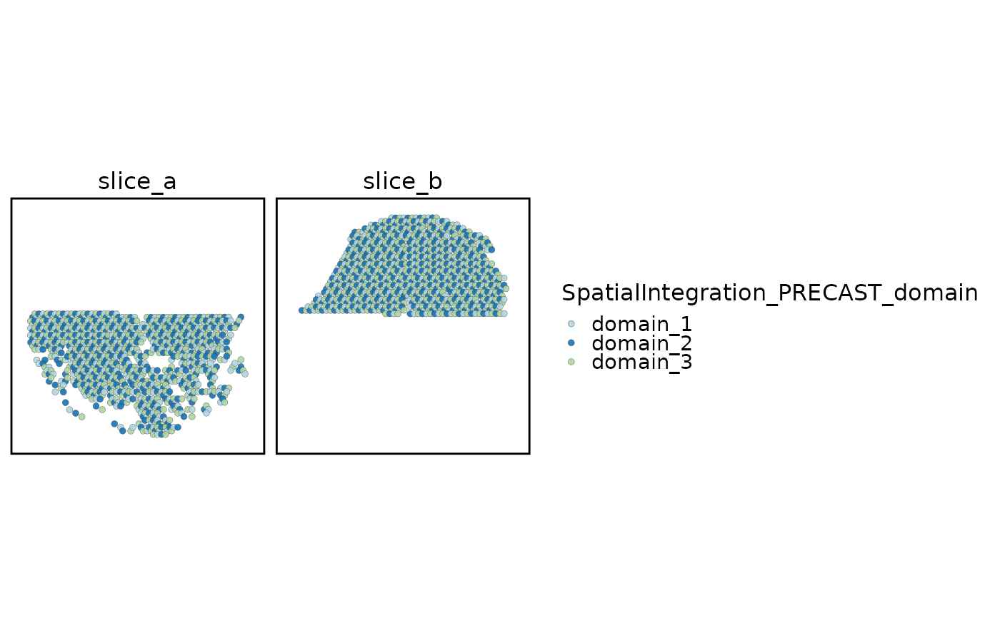
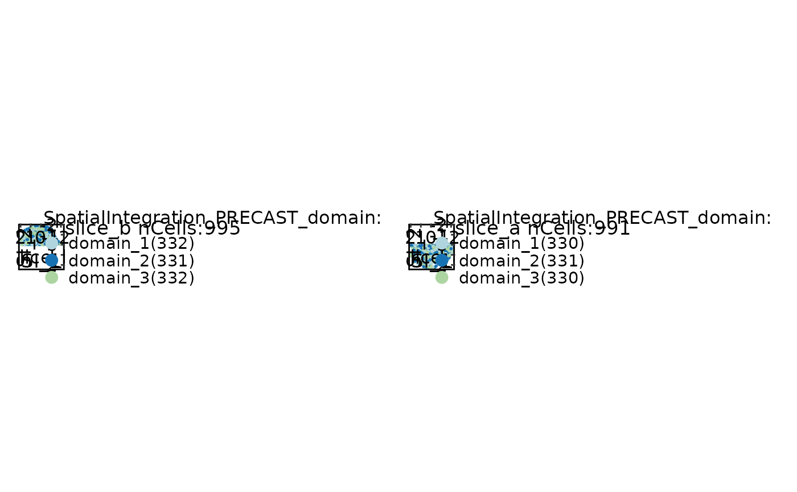
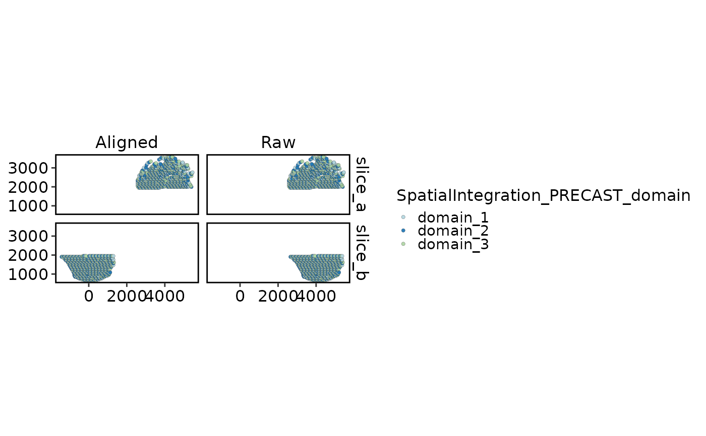
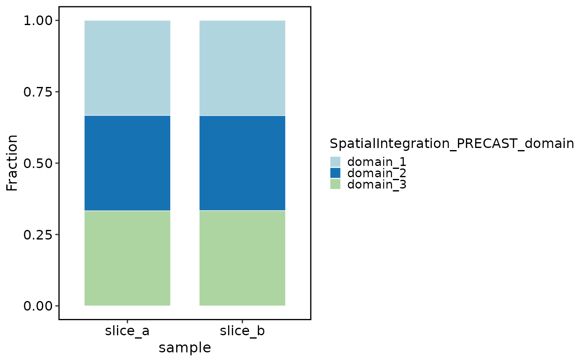

Visualize standardized results produced by RunSpatialIntegration().
Usage
SpatialIntegrationPlot(
srt,
method = NULL,
plot_type = c("spatial", "embedding", "alignment", "composition"),
group.by = NULL,
sample.by = NULL,
reduction = NULL,
cluster_colname = NULL,
coord.cols = c("col", "row"),
use_aligned = FALSE,
tool_name = "SpatialIntegration",
combine = TRUE,
palette = "Chinese",
palcolor = NULL,
theme_use = "theme_scop",
theme_args = list(),
...
)Arguments
- srt
A
Seuratobject containing spatial integration results.- method
Stored integration method. If
NULL, the active method stored insrt@tools[[tool_name]]is used.- plot_type
Plot type:
"spatial","embedding","alignment", or"composition".- group.by
Metadata column used for coloring. Defaults to the stored spatial domain column.
- sample.by
Metadata column used for facets or composition grouping. Defaults to the stored sample column.
- reduction
Reduction used for embedding plots. Defaults to the stored integration reduction.
- cluster_colname
Backward-compatible alias for
group.by.- coord.cols
Metadata coordinate columns used when no image is available.
- use_aligned
Whether spatial plots should use aligned coordinates when available.
- tool_name
Name of the
srt@toolsentry created byRunSpatialIntegration().- combine
Whether to combine plots when delegated plotting returns a list.
- palette
Color palette name. Available palettes can be found in thisplot::show_palettes. Default is
"Chinese".- palcolor
Custom colors used to create a color palette. Default is
NULL.- theme_use
Theme used. Can be a character string or a theme function. Default is
"theme_scop".- theme_args
Other arguments passed to the
theme_use. Default islist().- ...
Additional arguments passed to
SpatialSpotPlot()orCellDimPlot().
Examples
data(visium_human_pancreas_sub)
spatial <- visium_human_pancreas_sub
spatial$sample <- ifelse(spatial$y > stats::median(spatial$y), "slice_a", "slice_b")
spatial$SpatialIntegration_PRECAST_domain <- factor(
paste0("domain_", (seq_len(ncol(spatial)) - 1) %% 3 + 1)
)
embedding <- cbind(
SI_1 = as.numeric(scale(spatial$x)),
SI_2 = as.numeric(scale(spatial$y))
)
rownames(embedding) <- colnames(spatial)
spatial[["SpatialIntegration_PRECAST"]] <- SeuratObject::CreateDimReducObject(
embeddings = embedding,
key = "SI_",
assay = "Spatial"
)
spatial$SpatialIntegration_PRECAST_aligned_x <- spatial$x +
ifelse(spatial$sample == "slice_b", -stats::median(spatial$x), 0)
spatial$SpatialIntegration_PRECAST_aligned_y <- spatial$y
integration_parameters <- list(
method = "PRECAST",
sample.by = "sample",
assay = "Spatial",
layer = "counts",
coord.cols = c("x", "y"),
reduction.name = "SpatialIntegration_PRECAST",
cluster_colname = "SpatialIntegration_PRECAST_domain",
aligned_coord_cols = c(
"SpatialIntegration_PRECAST_aligned_x",
"SpatialIntegration_PRECAST_aligned_y"
)
)
spatial@tools$SpatialIntegration <- list(
active_method = "PRECAST",
methods = list(PRECAST = list(parameters = integration_parameters)),
parameters = integration_parameters,
samples = unique(spatial$sample),
cells = colnames(spatial)
)
SpatialIntegrationPlot(
spatial,
plot_type = "spatial",
overlay_image = FALSE,
coord.cols = c("x", "y")
)

SpatialIntegrationPlot(spatial, plot_type = "embedding")

SpatialIntegrationPlot(spatial, plot_type = "alignment")

SpatialIntegrationPlot(spatial, plot_type = "composition")
